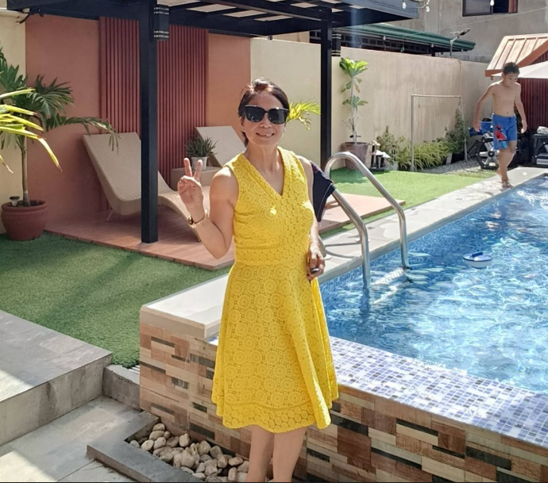
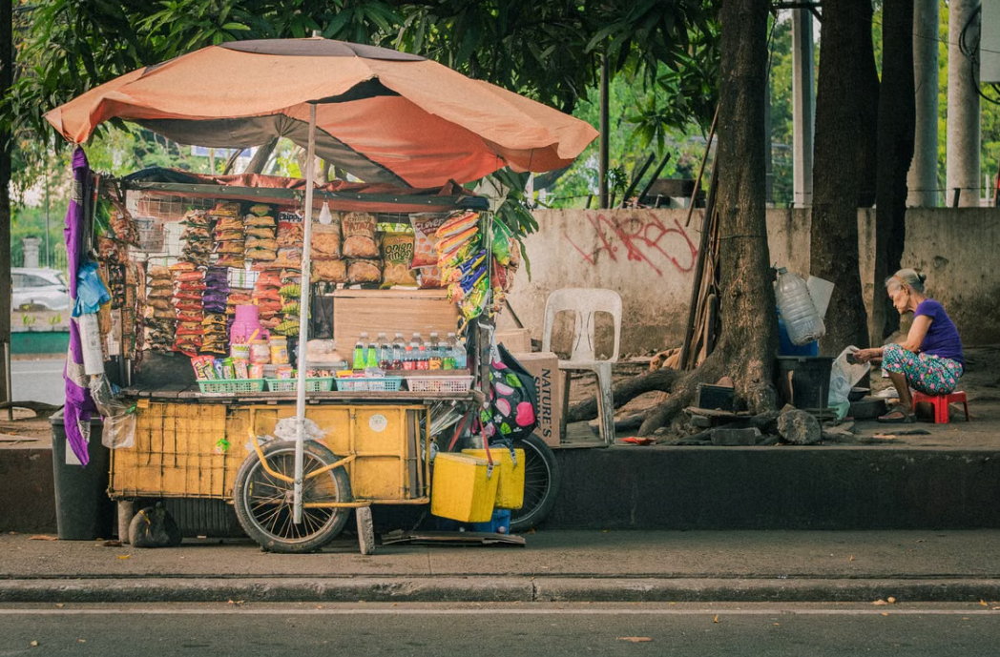

Masarap at malinis
Masarap na street food na inihahanda nang malinis at maayos.
KWENTO NI MAMA IMELDA
Kwento ito ng isang nanay na ginawa ang lahat para sa kanyang pamilya — at ng maliit na tindahang minahal ng buong barangay.


KUNG SAAN NAGSIMULA
Si Mama Imelda ang nagpalaki sa akin at sa dalawa kong kuya. Siya lang ang nag-alaga sa amin, at ginawa niya ang lahat para mabigyan kami ng pagkakataong makatapos ng pag-aaral.
Sa bahay namin noon sa Happy Homes, nagbukas siya ng maliit na tusok-tusok stall. Unti-unti, nakilala ito sa barangay dahil sa masarap na pagkain, malinis na pwesto, at maayos na pakikitungo ni Mama sa bawat customer.
May mga araw na sobrang haba ng pila, pero mag-isang inaasikaso ni Mama ang buong tindahan mula umaga hanggang hapon. Nakakapagtaka kung paano niya nagagawa ang lahat — pero nagagawa niya. Masaya ang buhay namin noon, at naging bahagi ng araw-araw ng maraming kapitbahay ang Mama Imelda’s Kitchen.
Hanggang sa kinailangan naming lisanin ang bahay dahil sa tunay na may-ari ng lupa. Naiwan namin ang pwesto at ang tindahang pinaghirapan namin. Okay naman kami ngayon, pero nami-miss pa rin namin ang panahong iyon.
Itong website ay alaala para kay Mama Imelda at sa maliit na tindahang nagbigay sa amin ng maraming magagandang memories.
Hindi ko mahanap ang mga picture ng mismong stall namin, kaya ang larawan ay hindi galing sa amin. Photo by Clarence Gaspar from Pexels: https://www.pexels.com/photo/street-food-cart-in-metro-manila-philippines-37406440/
ANG PANINIWALA NAMIN
Masarap na street food na inihahanda nang malinis at maayos.
Abot-kayang merienda na kayang pagsaluhan ng magkakaibigan at pamilya.
Magalang at maalagang pakikitungo sa bawat taong dumadaan.
MISSION
Gaya ng pag-aalaga ni Mama sa bawat customer, mahalaga ang kalidad, kalinisan, at maayos na pakikitungo.
VISION
Hangad naming magbigay ng saya at init ng tahanan sa bawat kagat.